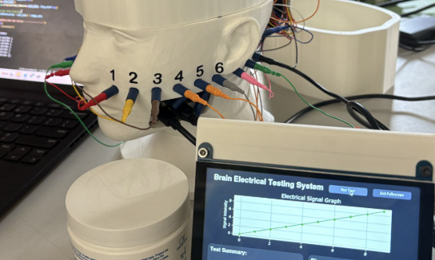
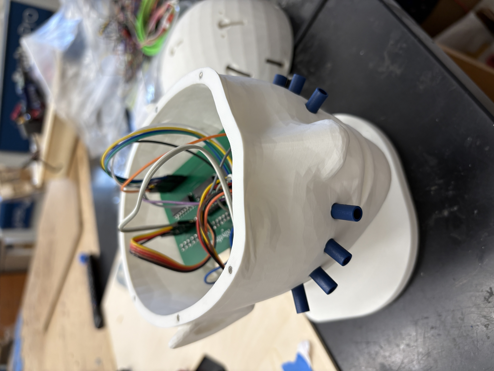
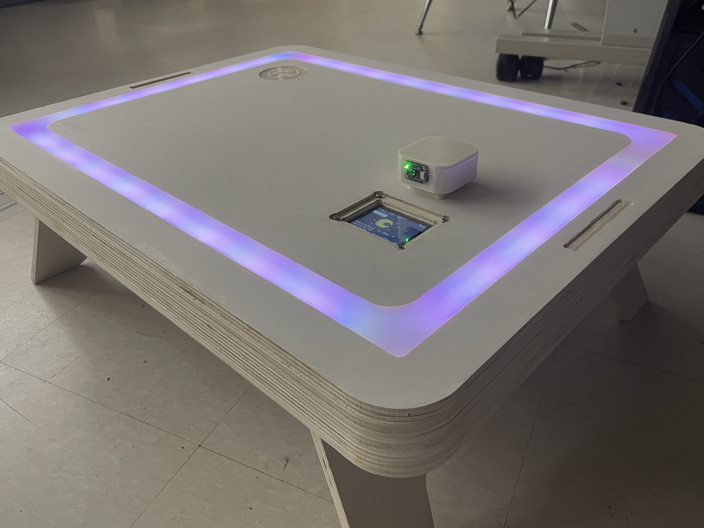

hey, i'm angelina!
I love designing end-to-end, human-centric designs. At the moment, I am studying EECS and BME @ MIT (6-5 + 20). I'm passionate about designing wearable tech, product design, and brain-computer interfaces.
things i've been up to
current fixations
Presently developing an sEMG-ML detection + alert wearable for epileptic tonic-clonic seizure activity to target sudden unexpected death in epilepsy (SUDEP)
Wearables · Machine Learning · Embedded Systems
previous quests
Co-fabricated a temperature-monitoring sleeve for nerve conduction studies patients, with PID-controlled heating and live data collection
Wearable · E-Textiles · Embedded Systems
Co-engineered a 21-channel EEG electrode testbed and stacked neural network ensemble to diagnose electrode abnormalities; trained to 98% accuracy on simulated defects
Quality Assurance Testing · Machine Learning · Embedded Systems


Devised and fabricated the PomoDesk, a smart pomodoro-integrated workspace with a gamified UI for neurodivergent students
Rapid Prototyping · Woodworking · Embedded Systems

press and social media
- spreading whimsy (wreaking havoc?) at FAB24 2024
- 2025 Fab Academy Bootcamp Featured Panelist 2025
- United Nations Youth Leader for the 2025 International Women's Conference 2025